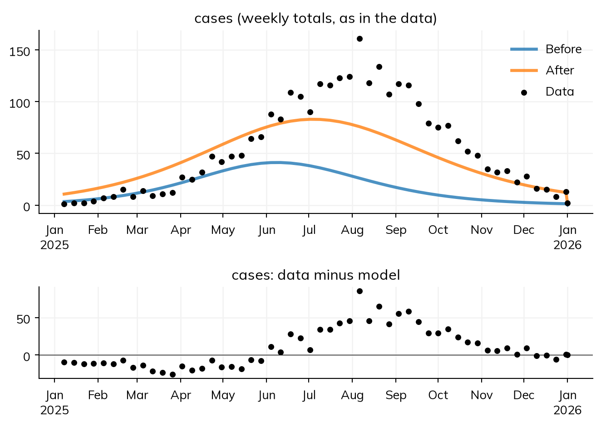
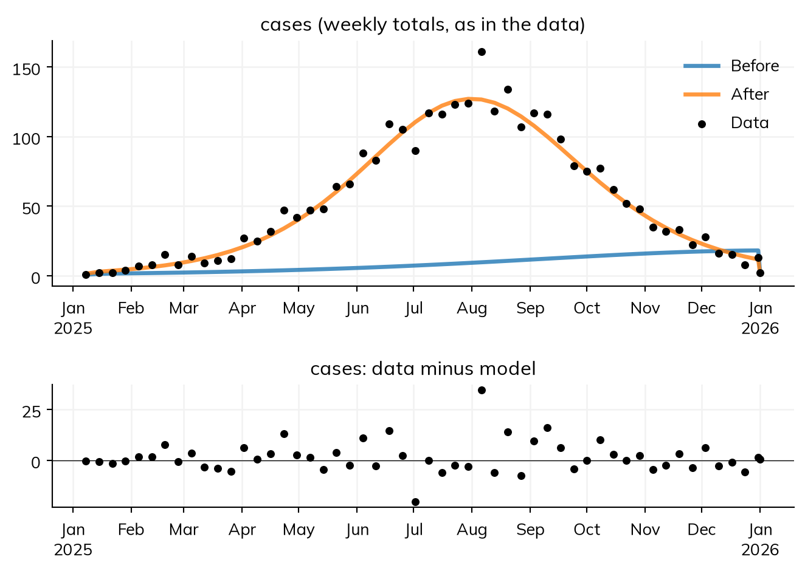
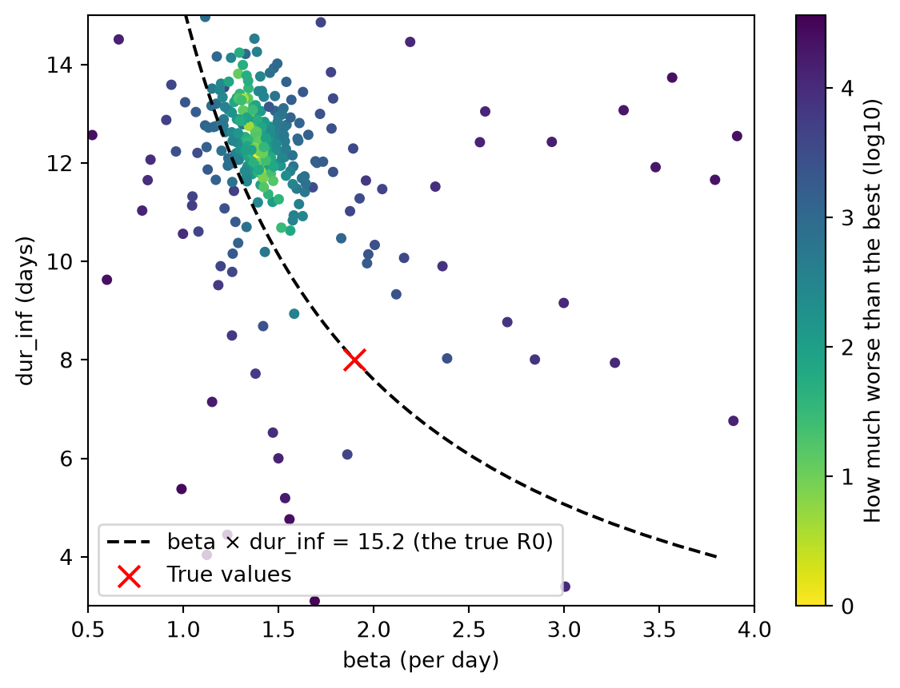

import starsim as ss
def make_seir():
""" Measles with a latent period: infected (E), then infectious (I) about 10 days later """
S, E, I, R = ss.states('S E I R')
beta = ss.par(1.5, bounds=[0.5, 4])
report = ss.par(0.3, bounds=[0.05, 1])
onset = E >> I @ ss.days(10)
cases = ss.outcome(report*onset)
return ss.Disease(S >> E @ beta*I, onset, I >> R @ ss.days(8), cases, init=dict(I=0.0001, R=0.9), name='measles')
pars = dict(total_pop=100_000, start='2025-01-01', stop='2026-01-01')
truth = ss.Sim(make_seir(), pars=dict(beta=1.9, report=0.5), rand_seed=2, verbose=0, **pars)
truth.run()
data = truth.to_synthetic_data('cases', resample='week')Fit diagnostics
sim.fit() always returns values. Whether to trust them has several parts: does the model match the data, did the search find the best values, do the data determine the values, and does the fitted model predict data it hasn’t seen? This page goes through the checks in that order. It assumes the basics of Fitting a model.
The examples use a measles outbreak in a town of 100,000, 90% of whom are immune. The data are a year of weekly reported cases, made from an SEIR model with a latent period of 10 days, beta = 1.9, and half of all cases reported:
Does the model match the data?
Start by looking: a fit can converge perfectly and still be wrong, if the model can’t produce the pattern in the data. Here the data are fitted with a model that leaves out the latent period, an SIR model:
def make_sir():
""" Measles without a latent period: infectious as soon as infected """
S, I, R = ss.states('S I R')
beta = ss.par(1.5, bounds=[0.5, 4])
report = ss.par(0.3, bounds=[0.05, 1])
infection = S >> I @ beta*I
cases = ss.outcome(report*infection)
return ss.Disease(infection, I >> R @ ss.days(8), cases, init=dict(I=0.0001, R=0.9), name='measles')
sir_fit = ss.Sim(make_sir(), data=data, **pars).fit()Searching on a log scale: report
Fitting by nelder-mead (2 fitted parameters, for which it is faster than gradients; override with method=)
Converged: the best two of 3 searches, from points of the scan that are apart, ended within 0.00038 of each other (objective values 0.3834 at beta=1.434, report=1; 0.3834 at beta=1.434, report=1; 0.3834 at beta=1.434, report=1; 199 evaluations)
The loss is 0.3834 at the best values and 0.6956 at the initial values/home/cliffk/idm/ssv4/starsim/internals/fitting.py:2571: AtBound:
the best-fit value of "report" (1) is at one of its bounds [0.05, 1]; consider widening them
fit.plot(residuals=True) shows the model against the data, and below it the residuals (data minus model) on the data’s own weeks:
sir_fit.plot(residuals=True)
The residuals have a pattern, and the fraction reported is pushed to its bound of 1: the model is wrong. For the right model, they wander above and below zero at random:
seir_fit = ss.Sim(make_seir(), data=data, **pars).fit(verbose=False)
seir_fit.plot(residuals=True)
A pattern in the residuals points to the structure of the model, or to how the data were defined, and no search will fix it. Some common patterns, and what to look at first:
| Pattern | Things to examine |
|---|---|
| The peak consistently too early or too late | The initial infections and when they are introduced; the latent period; reporting delays |
| The right shape but the wrong size | The population size; the fraction reported; whether the data count events (a flow) or people at a time (a stock) |
| A best value at a bound | The bounds; a missing process that the parameter is making up for; weak identification |
| Different starts giving different answers | Several optima, too short a search, a noisy objective |
| A good fit but an unstable projection | Parameters the data can’t tell apart; a change in the epidemic the model doesn’t have |
Also check that like is compared with like: incidence with case counts over the same interval, prevalence with a survey at a time, admissions with admissions rather than beds occupied, and dates aligned (see The data). fit.objective compares fits to the same data, but the plot shows where a model fails.
Did the search converge?
Every fit says whether it converged, and how it decided, in fit.converged and fit.why, which are also printed:
print(seir_fit.converged)
print(seir_fit.why)True
the best two of 3 searches, from points of the scan that are apart, ended within 9.5e-05 of each other (objective values 0.09543 at beta=1.9, report=0.4832; 0.09543 at beta=1.9, report=0.4832; 0.09544 at beta=1.9, report=0.4833; 275 evaluations)What “converged” means depends on the method (see the appendix). A fit that has not converged is not necessarily wrong, but can’t be trusted until it has been run longer, or the reason is understood. A fit that has converged has passed its method’s check, which is evidence, not proof, that it found the best fit or the whole posterior: a search can settle on a local best, and chains can agree while all missing the same region.
A best value at a bound
A best value at the edge of its bounds gives an AtBound warning, as for the SIR model above. It means one of three things: the true value is beyond the bound (widen it, if such values are plausible); the data don’t determine the parameter (see below); or the model is missing something, and the parameter is making up for it, as the reporting fraction was above.
The same answer again
A stochastic model is fitted to noisy scores, so a second fit, with another rand_seed=, shows how much the answer depends on chance:
import pandas as pd
stochastic = ss.Sim(make_seir(), data=data, solver='binomial', **pars)
rows = []
for seed in [1, 2]:
fit = stochastic.fit(rand_seed=seed, verbose=False, method=ss.fitting.method('optuna', n_trials=100))
rows.append(dict(rand_seed=seed, beta=fit.pars.beta, report=fit.pars.report, converged=fit.converged))
pd.DataFrame(rows).round(3)| rand_seed | beta | report | converged | |
|---|---|---|---|---|
| 0 | 1 | 1.967 | 0.389 | False |
| 1 | 2 | 2.020 | 0.420 | True |
If the fits differ by more than matters, use more trials, more runs per trial (n_runs=), or a likelihood, with which Optuna scores each trial by a particle filter rather than by runs. For a deterministic model, more starting points (scan=) do the same job. Check a stochastic fit against many runs, ss.parallel(fit.sim, n_runs=20), not one, as in Fitting a model.
The time step
A model run as agents, or as a chain binomial with ss.solvers.binomial(substeps=1), takes infection a step at a time, and when its rates are fast compared with the step, the step changes the fitted values (the chain binomial’s default substeps keep this small) (see Solvers and backends). fit.sim.check_dt() reruns the fitted sim with half the step and shows how much each result changes; if more than the mismatch of the fit, fit again with the smaller step.
A posterior
For a posterior by NUTS or particle MCMC, fit.summarize() gives two checks for each parameter (ABC-SMC’s has the effective sample size only):
- R-hat (
rhat) compares the spread within each chain with that between chains. Above 1.01, the chains disagree, and the posterior is not yet reliable. - Effective sample size (
ess) is how many independent draws the correlated draws are worth. A few hundred is usually enough for a median and a rough 95% interval; the ends of an interval, or a more precise one, need more.
NUTS also counts divergent draws (fit.diagnostics.divergences), where the sampler’s path went wrong; even a few mean the posterior may be missing a region. If any check fails, the fit warns (ss.errors.NotConverged). More warm-up (warmup=) sometimes fixes it, but a common cause is a ridge (see below): then fix a parameter that is known from elsewhere, or get more data.
Looking at the search
For any method, fit.to_df() has every evaluation, for plots of your own (there is one below). For Optuna, fit.study takes Optuna’s plots (these need Plotly): how the best score improved (has it leveled off?), which parameters mattered most, and the score over a pair of parameters (a long diagonal valley is a ridge):
import optuna
optuna.visualization.plot_optimization_history(fit.study)
optuna.visualization.plot_param_importances(fit.study)
optuna.visualization.plot_contour(fit.study, params=['beta', 'report'])Can the data tell the parameters apart?
A parameter is identifiable if the data determine its value. This fails in two ways:
- Structurally: the model can’t tell two parameters apart, whatever the data, e.g. when transmission depends only on the product of contacts and the chance of infection per contact.
- Practically: these data can’t, because there is too little of it, it is too noisy, or it doesn’t cover the part of the epidemic that would show the difference.
A practical check is to fit data made from the model with known values, as this page does. If the fit doesn’t recover them, it is unlikely to recover the truth from real data. If it does, that is evidence for those values and data like these, not a proof of identifiability: other values, or other data, can behave differently. Starsim also notes when two parameters appear in the model only multiplied together (e.g. contacts*p_infect*I), so that the data determine only their product: fit one and fix the other, or make their product one parameter. For a posterior, it notes parameters that are almost perfectly correlated.
Recovering known values
The SEIR model, now with three unknowns, beta, the infectious period dur_inf, and report, and a Poisson likelihood, fitted to data from a run with beta = 1.9, dur_inf = 8 days, and report = 0.5:
S, E, I, R = ss.states('S E I R')
beta = ss.par(1.5, bounds=[0.5, 4]) # Transmission rate per day
dur_inf = ss.par(ss.days(6), bounds=[3, 15]) # Infectious period, in days
report = ss.par(0.3, bounds=[0.05, 1]) # Fraction of cases reported
infection = S >> E @ beta*I
onset = E >> I @ ss.days(10)
recovery = I >> R @ dur_inf
cases = ss.outcome(report*onset, likelihood=ss.poisson())
measles = ss.Disease(infection, onset, recovery, cases, init=dict(I=0.0001, R=0.9))
pars = dict(total_pop=100_000, start='2025-01-01', stop='2026-01-01')
true_values = dict(beta=1.9, dur_inf=ss.days(8), report=0.5)
truth = ss.Sim(measles, pars=true_values, rand_seed=2, **pars)
truth.run()
weekly = truth.to_synthetic_data('cases', resample='week')
sim = ss.Sim(measles, data=weekly, **pars)
fit = sim.fit()
table = fit.table.copy()
table['true'] = [1.9, 8, 0.5]
tableSim: measles, 100,000 people, as an ODE, 2025-01-01 to 2026-01-01
measles: R0 = 15.2 (R = 1.52 at the start, with 10% susceptible), with 10 infectious at the start
Done in 0.0088 s; measles: 5,858 infections; at most 298 infectious, on 2025-08-05
Using the likelihood: the sum of the log-likelihoods of cases, treated as independent
Searching on a log scale: report
Compiling the run with JAX, estimated time: 0.2-5 s
Compiled the run with JAX in 0.8 s
Fitting by l-bfgs-b (gradients by automatic differentiation; for a posterior, method="nuts"; override with method=)
Compiling the gradient of the log-likelihood with JAX, estimated time: 0.5-5 s
Compiled the gradient of the log-likelihood with JAX in 3.1 s
Compiling the gradient with JAX, estimated time: 0.2-5 s
Compiled the gradient with JAX in 1.4 s
Converged: the best two of 3 searches, from points of the scan that are apart, ended within 0.1 of each other (objective values 164.4 at beta=1.909, dur_inf=7.956, report=0.4974; 164.4 at beta=1.909, dur_inf=7.956, report=0.4974; 164.4 at beta=1.909, dur_inf=7.956, report=0.4974; 131 evaluations)
The negative log-likelihood is 164.4 at the best values and 1.327e+04 at the initial values| par | initial | best | low | high | true | |
|---|---|---|---|---|---|---|
| 0 | beta | 1.5 | 1.908858 | 0.50 | 4.0 | 1.9 |
| 1 | dur_inf | 6.0 | 7.956033 | 3.00 | 15.0 | 8.0 |
| 2 | report | 0.3 | 0.497401 | 0.05 | 1.0 | 0.5 |
Which combinations the data determine
A best fit is a single point; it doesn’t show how far the values could move and still fit nearly as well. Optuna spreads its trials widely before it narrows down, and each is kept, with its score, in fit.to_df(), so plotting beta against dur_inf for each trial shows the shape of the fit:
import numpy as np
import matplotlib.pyplot as plt
search = sim.fit(method=ss.fitting.method('optuna', n_trials=300), rand_seed=1, verbose=False)
trials = search.to_df()
worse = np.log10(1 + trials.objective - trials.objective.min()) # 0 at the best trial
fig, ax = plt.subplots()
points = ax.scatter(trials.beta, trials.dur_inf, c=worse, cmap='viridis_r', s=15)
d = np.linspace(4, 15, 50)
ax.plot(1.9*8/d, d, 'k--', label='beta × dur_inf = 15.2 (the true R0)')
ax.scatter(1.9, 8, marker='x', s=100, color='red', zorder=10, label='True values')
ax.set_xlabel('beta (per day)')
ax.set_ylabel('dur_inf (days)')
ax.set_xlim(0.5, 4) # The bounds of each
ax.set_ylim(3, 15)
plt.colorbar(points, ax=ax, label='How much worse than the best (log10)')
ax.legend();
The good fits lie along a ridge of constant R0 (β × the infectious period): the data determine R0 well, but β and the infectious period separately only weakly.
Less data, and fixing what is known
With 16 weeks of data, before the peak, early growth can be matched by many combinations of β and the infectious period:
early = sim.fit(data=weekly.iloc[:16], method='nelder-mead')
early.tableUsing the likelihood: the sum of the log-likelihoods of cases, treated as independent
Searching on a log scale: report
Not converged: the 3 searches, from points of the scan that are apart, ended at different objective values (41.19 at beta=1.195, dur_inf=15, report=0.5946; 48.67 at beta=3.4, dur_inf=5.017, report=0.1253; 59.11 at beta=4, dur_inf=5.04, report=0.05; 1414 evaluations), so the best may be a local optimum; try a larger scan (scan=) or more searches (restarts=)
The negative log-likelihood is 41.19 at the best values and 564 at the initial values/home/cliffk/idm/ssv4/starsim/internals/fitting.py:2571: AtBound:
the best-fit value of "dur_inf" (15) is at one of its bounds [3, 15]; consider widening them
| par | initial | best | low | high | |
|---|---|---|---|---|---|
| 0 | beta | 1.5 | 1.194978 | 0.50 | 4.0 |
| 1 | dur_inf | 6.0 | 15.000000 | 3.00 | 15.0 |
| 2 | report | 0.3 | 0.594601 | 0.05 | 1.0 |
Wider bounds would not help here; more data, data of another kind (such as a serosurvey), or fixing a parameter that is known from elsewhere would. pars= fits only the parameters named. Here the infectious period is fixed at its true value of 8 days, and at a wrong value of 6:
rows = []
for days in [8, 6]:
fixed = ss.Sim(measles, pars=dict(dur_inf=ss.days(days)), **pars) # The infectious period, fixed
est = fixed.fit(data=weekly.iloc[:16], pars=['beta', 'report'], verbose=False)
rows.append(dict(dur_inf=days, beta=est.pars.beta, report=est.pars.report, converged=est.converged))
pd.DataFrame(rows).round(3)| dur_inf | beta | report | converged | |
|---|---|---|---|---|
| 0 | 8 | 1.958 | 0.446 | True |
| 1 | 6 | 2.505 | 0.395 | True |
Fixing a parameter at a wrong value biases the others, as the fit at 6 days shows. Even at the right value, fixing it leaves its uncertainty out: the intervals of the others are narrower than they would be if it were fitted too. So fix only what is well known from elsewhere, and say so when reporting the fit.
Noise in the data
A real epidemic is one realization of a chance process. To see how much that moves the estimates, fit several data sets from a stochastic version of the model, each with its own seed:
known = ss.Sim(measles, pars=dict(dur_inf=ss.days(8)), **pars) # The infectious period fixed at its true value
rows = []
for seed in range(1, 7):
epidemic = ss.Sim(measles, pars=true_values, solver='binomial', rand_seed=seed, verbose=0, **pars).run()
epidemic_data = epidemic.to_synthetic_data('cases', resample='week', rand_seed=seed)
est = known.fit(data=epidemic_data, pars=['beta', 'report'], verbose=False)
rows.append(dict(seed=seed, total_cases=epidemic_data.cases.sum(), beta=est.pars.beta, report=est.pars.report))
pd.DataFrame(rows).round(3)| seed | total_cases | beta | report | |
|---|---|---|---|---|
| 0 | 1 | 2776 | 1.811 | 0.535 |
| 1 | 2 | 2622 | 1.757 | 0.557 |
| 2 | 3 | 2777 | 1.831 | 0.519 |
| 3 | 4 | 2939 | 1.991 | 0.465 |
| 4 | 5 | 2723 | 1.852 | 0.495 |
| 5 | 6 | 3041 | 1.981 | 0.485 |
The spread of the estimates is how precisely one outbreak of this size can determine the parameters. An ODE’s posterior is much narrower, and can exclude the truth (see Fitting methods). To run the model at draws from the priors, for a Bayesian workflow of your own, use ss.parallel(sim, priors=True, n_runs=200); the profile likelihood, which shows how well the data determine one parameter, is in Gradients.
Does the model predict?
A model with more parameters usually fits better without being better. A fairer test is how well a model fitted to the start of the data predicts the rest. ss.fitting.compare_models() fits each model to the data before a cut, runs it forward, and scores it on the part held out (by default the last 25% of each series; here holdout= gives dates two months and one month before the peak):
models = {'SIR': ss.Sim(make_sir(), data=data, **pars), 'SEIR': ss.Sim(make_seir(), data=data, **pars)}
for cut in ['2025-06-01', '2025-07-01']:
comparison = ss.fitting.compare_models(models, method='nelder-mead', holdout=cut, verbose=False)
comparison.summarize()held out: from 2025-06-01 (cases: 2025-06-04 to 2025-12-24)
fit error and prediction error are the normalized absolute error, on the data fitted to and on the held-out data (lower is better)
held out: from 2025-07-01 (cases: 2025-07-02 to 2025-12-24)
fit error and prediction error are the normalized absolute error, on the data fitted to and on the held-out data (lower is better)A stochastic model is scored over many runs at its best values (n_runs=, 100 by default), which is harsher than on an ODE. folds= repeats the comparison over several cut points, and comparison.plot() shows each model’s fit and prediction.
A checklist
| Check | How | A problem looks like | What to do |
|---|---|---|---|
| The model matches the data | fit.plot(residuals=True) |
A pattern in the residuals; a parameter pushed to a bound | Change the model, or how the data are matched to it |
| The search converged | fit.converged, fit.why |
“Not converged”, with the reason | Run longer (see the appendix) |
| No value is at a bound | The AtBound warning |
A best value at the edge | Widen the bounds only if such values are plausible |
| The answer is stable | Fit again with another rand_seed= or scan= |
Different values each time | More trials, runs, or particles; a likelihood |
| The parameters are identifiable | Recover known values; the notes that parameters appear only together or are correlated | Values far from the truth; a ridge | Fix one parameter from other evidence, or get more data, or data of another kind |
| The posterior is reliable | rhat, ess, divergences |
R-hat above 1.01, few effective draws, any divergences | More warm-up and draws; check identifiability |
| The model predicts | ss.fitting.compare_models() |
A model that fits well but predicts badly | A simpler model, or more data |
| The fit is plausible | Compare with what is known from elsewhere | A reporting fraction above 1, an infectious period of months | Rethink the model |
The last check matters most, and no software can make it: whether the values, and the model, make sense for the disease and the setting is a judgment for the modeler.
When reporting a fit, say what each data series is and how it was matched to the model; the measure of fit or likelihood; the parameters fitted, with bounds and priors, and those fixed and why; the method, its settings, and the seed; the diagnostics above; and the versions of Starsim and the data.
Further reading
- Stan: Posterior predictive checks: checking a fitted model against data it should reproduce
- Optuna: Visualization: the plots of a search that
fit.studytakes - ArviZ: R-hat, effective sample size, and plots for checking a posterior
- pomp: Getting started: diagnostics of fits of stochastic models, including iterated filtering and profiles
- Stan: Problematic posteriors: ridges and non-identified parameters in a posterior, and what to do about them
Appendix
When each method has converged
The rule by which each method sets fit.converged (and says why in fit.why), and what to try if it hasn’t:
| Method | Converged when | If not |
|---|---|---|
SciPy optimizers ('nelder-mead', 'powell', 'l-bfgs-b', 'slsqp') |
The two best searches, from the best few points of a scan that are apart, end at the same value (with a single search, SciPy’s own stopping rule) | More starting points (scan=) or searches (restarts=), or more iterations (maxiter=); a sign of several local optima, or a ridge |
Optuna ('optuna') |
The best score improved by less than 1% over the last quarter of the trials, and the best trial is not one of the first 10 (which are random) or the starting values | More trials (n_trials=) |
Iterated filtering ('if2') |
Chains from different starts end within 2 of the best log-likelihood | More passes (iterations=) or particles (particles=); better bounds, if a chain has wandered off where the outbreak dies out |
NUTS ('nuts') |
The chains agree (R-hat at most 1.01) and no draws diverged | More warm-up (warmup=); a higher max_draws=; check identifiability |
Particle MCMC ('pmcmc') |
The chains agree (R-hat at most 1.01) | More draws and warm-up; more particles, if the acceptance is low |
ABC-SMC ('abc-smc') |
Not assessed (fit.converged is None): no rule says when its final tolerance is close enough; fit.why and fit.diagnostics give it |
More generations (generations=) or samples (samples=); with a likelihood, 'pmcmc' |
| A list of methods | Its last stage converged; a stage that doesn’t stops the list, with a warning, and its fit (or the last that converged) is returned | Make that stage converge, by its own rule |
A best fit of a stochastic model is also marked as not converged if, rerun with the same seeds, its best values score worse than the starting values.
Other warnings and notes
The messages a fit can give that are not covered above. Warnings are Python warnings (some of a class of their own, which warnings.filterwarnings() can select); notes are printed, and are silenced with verbose=False.
| Message | Kind | Means | What to do |
|---|---|---|---|
| The profile stays within the threshold up to a bound | Warning, ss.errors.AtBound |
A profile likelihood’s interval may extend beyond the bounds | Wider bounds, or more values |
| The scan tries fewer than 10 points for each parameter | Note | With more than 10 parameters, the scan is capped at 100 points | scan= to change it |
| The fit would take the gradients (or the posterior) with Python in the loop | Error, ss.CapabilityError |
A method with gradients was asked for, but something in the model or likelihood can’t be run in JAX (e.g. a likelihood given as a function, or an initial value that is not linear in the fitted parameters) | A method without gradients (e.g. 'nelder-mead', or no method=), or require_jax=False to accept the slower way |
| A data column matches no result | Note when the sim is initialized, and an error when it is fitted | A typo in a header, or a result that doesn’t exist | Rename the column (ss.SimData(aliases=...)) |